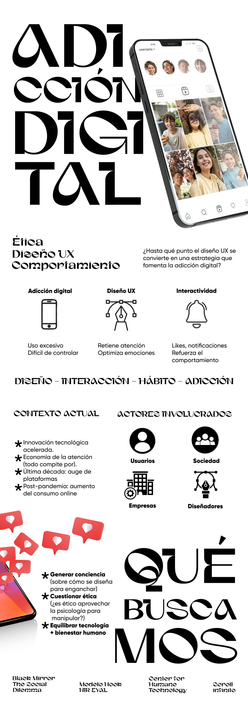
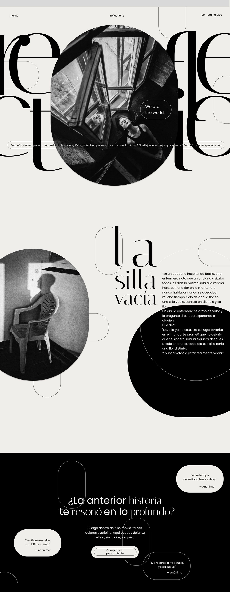
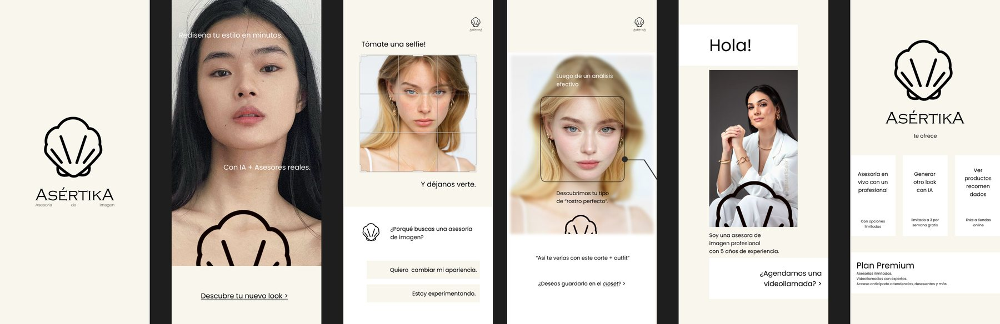

Diseño Digital
Ideas que
encuentran
su espacio.
Diseño interfaces, sistemas y experiencias digitales donde una idea puede orientarse, respirar y encontrarse con otras personas.
Explorar el espacioEl espacio también comunica
Una interfaz no solo se usa.
Se habita.
Por eso diseño el recorrido antes que la pantalla.
Sistemas de orientación
¿Qué puede
encontrar una idea?
Del primer gesto a la experiencia completa: construyo espacios digitales que tienen dirección y carácter.
La arquitectura
De la idea
al espacio.
Cada decisión crea una coordenada. Juntas hacen que la experiencia encuentre su forma de ser recorrida.
- 01
Escuchar
Entender a quién recibe la experiencia y qué necesita encontrar.
- 02
Ordenar
Dar jerarquía a la información para que el contenido tenga aire y dirección.
- 03
Diseñar
Construir un lenguaje visual que haga reconocible cada interacción.
- 04
Probar
Moverse por el sistema, descubrir fricciones y ajustar lo invisible.
- 05
Abrir
Lanzar una experiencia que siga encontrando nuevas posibilidades.
01 / Investigación-creación
Adicción
digital.
Investigación Creación 1. ¿Hasta qué punto el diseño UX se convierte en una estrategia que fomenta la adicción digital? Una investigación sobre ética, interactividad y comportamiento, contada en una pieza gráfica y un podcast.
Lo que busca
- Generar concienciasobre cómo se diseña para enganchar.
- Cuestionar la ética¿es ético aprovechar la psicología para manipular?
- Equilibrartecnología y bienestar humano.

02 / Investigación UX
Lo que los números
no cuentan solos.
Análisis de Usuarios II. Una investigación de un semestre sobre la app y la web de Laika (tienda y servicios para mascotas): ¿qué hace que un tutor entre a Laika… y qué hace que se quede? Métodos mixtos, growth, usabilidad y accesibilidad.
MÉTODO
- Encuesta36 tutores de mascotas: hábitos, compras, servicios y fidelización.
- Diario de estudio3 participantes contando su día con Laika en tiempo real, con capturas.
- TriangulaciónCruce de cada etapa del journey entre lo cuantitativo y lo cualitativo.
- Funnel AARRRMétricas por etapa y cinco hipótesis de mejora para growth.
- Experimento A/BVista rápida de producto sin carrito obligatorio: muestra, duración y métricas.
- Usabilidad5 participantes, 6 tareas y SUS. Agendar un servicio y registrar vacunas: 0 % de éxito.
- AccesibilidadAuditoría WCAG 2.1 AA de 5 páginas web: 162 elementos afectados según axe.
LO QUE ENCONTRAMOS
La encuesta daba la compra como “aceptable” (3,9 / 5), pero el diario mostró dos experiencias distintas: es fácil para quien ya decidió entrar y difícil decidirse a entrar. La barrera es de hábito y confianza, no de producto.
Hipótesis priorizadaSi se puede ver el precio y las características sin agregar el producto al carrito, aumentará la conversión de búsqueda a compra, porque se elimina un compromiso prematuro.
Equipo: Emily Chisaba, Damián Borda y yo. Muestras pequeñas: sirven para encontrar dirección y fricciones, no para tasas exactas.
Ver la presentación completa PDF · 43 diapositivas03 / Interfaces
Espacios que
ya están abiertos.
Prototipos en Figma donde la dirección visual y la experiencia de uso se diseñan al mismo tiempo.


Prueba de navegación
¿Y si el espacio
también responde?
Una buena interfaz no te detiene. Te acompaña.